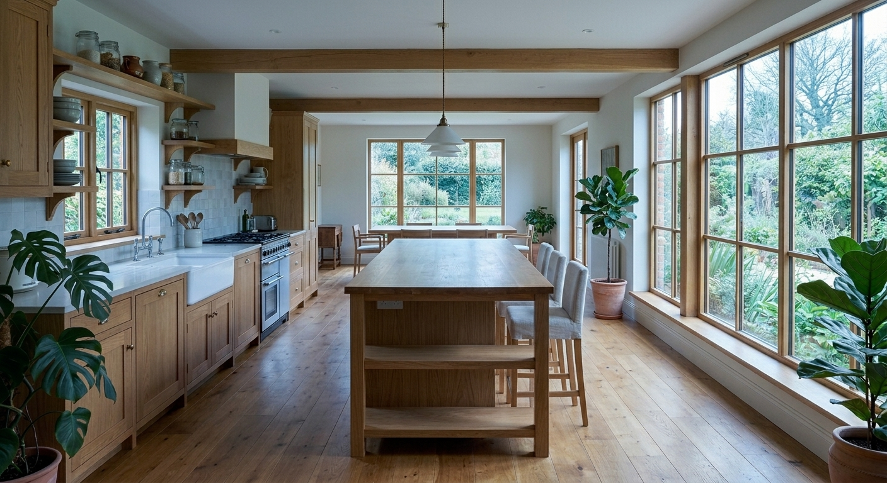
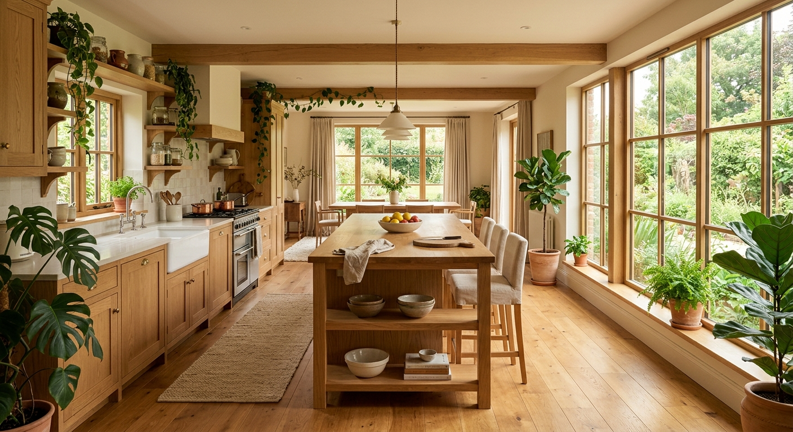
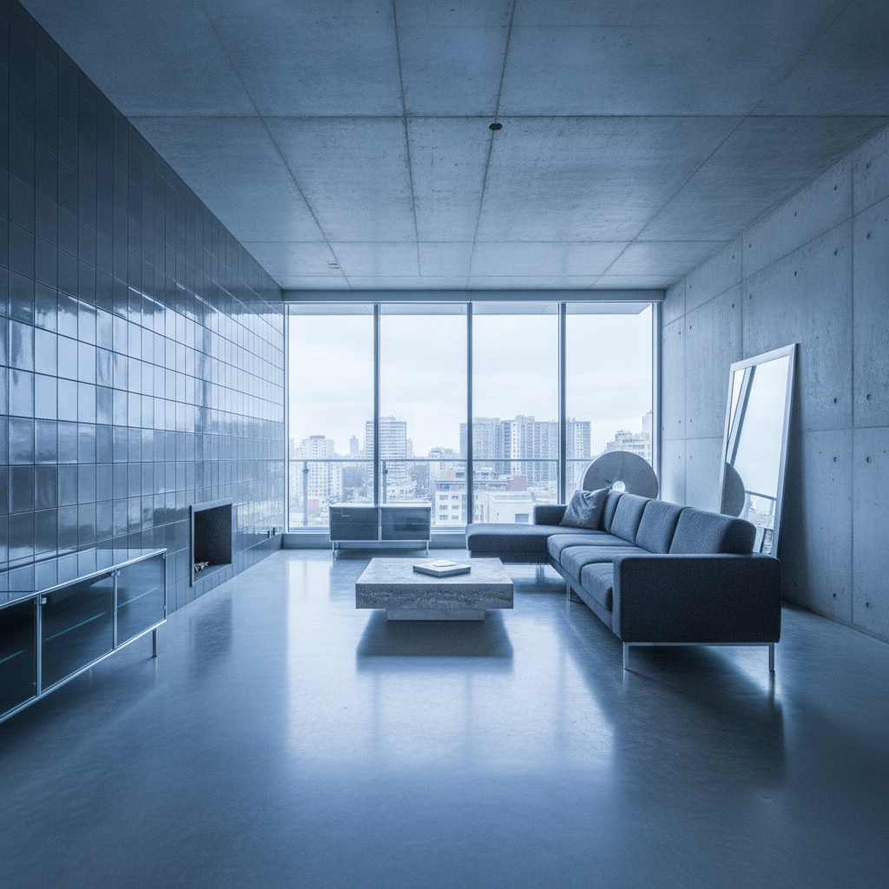
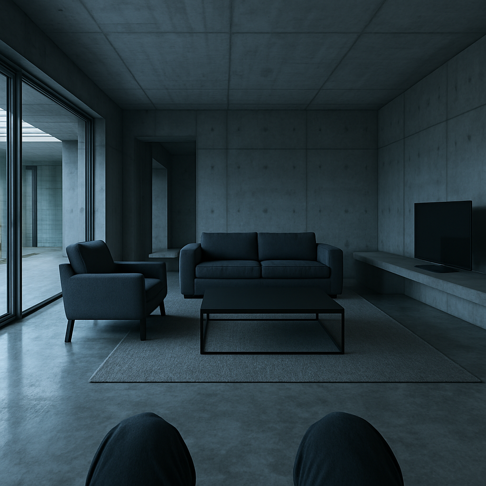

Energy, cost, code: all measured. The lived sensory experience of a room is not. And the ripple between the senses, where every design move has a hidden second cost, is invisible.
A space is a conversation between your senses. The overall score is the least interesting part. The lesson lives in the edges, and we prove each idea where it shows.
on the current Gemini 3.x generation, verified live against Google's docs before trust.
| tier | model ID | does | $ / 1M (in · out) | context |
|---|---|---|---|---|
| FAST | gemini-3.1-flash-lite | routing / classification | $0.25 · $1.50 | 1.0M |
| SMART | gemini-3.5-flash | user-facing reasoning | $1.50 · $9.00 | 1.0M |
| IMAGE | gemini-3.1-flash-image | room renders (Nano Banana 2) | ~$0.067 / img | 128k |
3.1-pro-preview top reasoning, ~8× cost, preview / nano-banana-pro 4K hero renders, ~3× img cost
small models route the turn; the reasoning tier runs only where quality compounds.
A quiz, then a curated moodboard. Sensi compiles a sensory persona.
proves it's personal
Signals from onboarding raise per-sense weights (they only ever go up):
→ Emilie: thermal .90 / acoustic .80 / olfactory .90 …
Score six senses on a real CAD plan, find the conflicts you can't, then edit and watch it ripple.
proves the honest number + the ripple
worked example Kitchen / layout 201 → room-type baseline, then design levers from the real geometry:
| sense | baseline | design levers (from the plan) | effective |
|---|---|---|---|
| △ thermal | 0.50 | N orientation −0.03 | 0.47 |
| ○ visual | 0.70 | glazing < 10% −0.15 | 0.55 |
| ∿ acoustic | 0.45 | reverb on hard tile −0.06 | 0.39 |
| □ spatial | 0.60 | volume / norm = 1.7 ↑ | 1.00 |
| ≈ olfactory | 0.35 | mech vent −0.05 · wet adj −0.10 | 0.20 |
| ∶ tactile | 0.60 | ceramic floor / plaster walls | 0.55 |
A failing sense drags its partners. Kitchen acoustic 0.39 pulls down thermal and visual:
No averaging. Half the weighted mean, half the single worst sense:
one scripted session, every node measured. FAST stays sub-second; SMART is where the time + cost live.
vs the old 2.5 tier: SMART +33% slower, session +3.8× costlier (3.5 Flash's thinking budget). FAST stays near-free. we pay latency + cents for capability. Judged blind, the new reasoning still won 4 of 5 nodes: no regression.
The output answers the input. Your persona and aesthetic return, and every room becomes an image of how it feels.
proves made real
the Kitchen's scores on a 0→1 band. Below 0.45 or above 0.70 writes a phrase; the mid stays silent.
input → output: the circle closes

[ before → assets/shots/report-before.png ]
[ after → assets/shots/report-after.png ]how it holds: the "after" is the room's canonical render; the "before" is that same image edited by a "what changed" clause, so the scene stays put and only the change moves.


Google: clean architectural daylight. OpenAI: darker, cinematic. → we stay on Google: 2.75× faster, a touch cheaper, steadier across edits.
higher-resolution, photorealistic light vs the old model's flatter CG. how it feels, made believable.
The couplings come from peer-reviewed building science and standard room physics. Every research claim went through an adversarial fact-check; the ones that didn't survive were cut. Where evidence is thin, we encode the direction, not a fake-precise number.
R1 autism sensory taxonomy / R2 multisensory mind / R3 cross-modal thermal / S2 Yang & Moon 2019 / S6 ASHRAE
the first tool that makes the coupling between senses designable, not just measurable.
And the honest one: is a felt-experience score accountable, or just persuasive?
now let the senses talk